|
|
|
plants text index | photo
index
|
| coastal plants |
|
Sea hibiscus
Talipariti tiliaceum Family Malvaceae updated Nov 10 Where seen? A very common shrub to tall tree, this plant with delightful heart-shaped leaves and bright yellow flowers that attract red bugs is often seen on many of our wild shores. It is also often planted in our seaside parks. According to Corners, it is common on seashores throughout the tropics, and found in sandy and rocky shores of Malaya, extending up rivers and penetrating mangroves and nipah palm communities. It is often planted by streams and ditches in rice-fields. According to Tomlinson, it is common on seashores especially adjacent to beaches, but also recorded to altitudes of 800m, and is widely planted. Its precise natural and geographic distribution is uncertain. The Sea hibiscus has been regrouped and renamed as Talipariti tiliaceum based on DNA studies. But the old name Hibiscus tiliaceus.is still widely used. Features: A shrub to a tall tree growing to 10-15m. Leaves (10-15cm) heart-shaped, dark green and shiny above, white and finely furry beneath. The leaves have tiny slits on the main veins on the underside of the leaf. Secretions from these slits often attracts ants. Flower a typical hibiscus-shape, yellow with maroon eye fading to dull pink or orange before falling. Stigma column light yellow, stigma deep crimson purple. According to Corners, the flower blooms at about 9am, long after sunrise and close in the afternoon at about 4pm. The petals usually fall off the same evening or the next morning. Usually, every flower sets fruit. Fruit ripens to a tiny dry capsule (2-3cm) surrounded by the calyx. It splits open to reveal the seeds which float and can withstand extended periods of immersion in sea water. Role in the habitat: Each of three veins on the underside of the leaf near the stalk have a small slit. A sweet substance is secreted from these slits, and ants of all sizes can be seen drinking from them. Among these, are the fierce Weaver ants (Oecophylla smaragdina), which may help keep off insect pests. Some insects that feed on the plant include the Cotton stainer bug (Dysdercus decussatus) that feeds on its seeds. Human uses: According to Burkill, this shrub has been "one of the most important fibre-plants among the inhabitants of Malaya" and were planted wherever the Malays went. The fibres from the plant is used to make cords as well as to caulk boats. Cords are made into fishing lines and nets as well as bags. Cords were also used for harpoons to catch dugongs, and in elephant gear for dragging timbers. In the Pacific, it was the fibre "par excellence" and used for all purposes. The cords may be strengthened by tanning. To prepare the fibre, the bark is stripped and spread out on the ground for a day or two to dry. The fibre is then separated from the outer layers and twisted or plaited into a rope. The timber has a wide range of uses from building houses, boats, household implements to firewood. The leaves may be fed to cattle. According to Wee, the leaves are considered cooling in Malaysia and Indonesia and used to control fevers. The leaves are also used to sooth and remove phlegm in respiratory ailments. In the Philippines, fresh bark soaked in water is used to treat dysentery. |
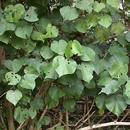 Sungei Buloh Wetland Reserve, Jan 02 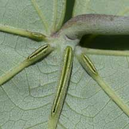 Slits on the leaf veins. Sungei Buloh Wetland Reserve, Apr 02 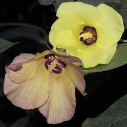 The yellow flower turns orange before it drops off. Sungei Buloh Wetland Reserve, Nov 03 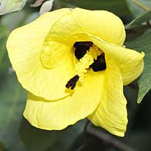 Pulau Semakau, Jan 09 |
 Adult Bugs are often found in large numbers under Sea hibiscus leaves. Sungei Buloh Wetland Reserve, Feb 09 |
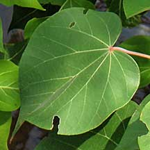 Kranji Canal, Mar 09 |
|
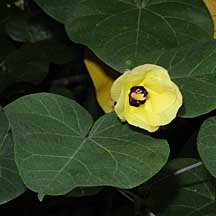 Changi Boardwalk, Sep 09 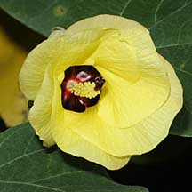 |
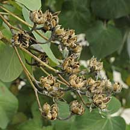 Changi Boardwalk, Sep 09 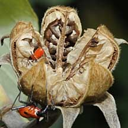 |
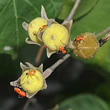 Chek Jawa, Oct 09 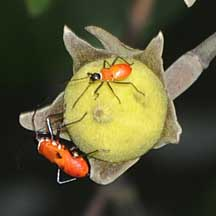 |
|
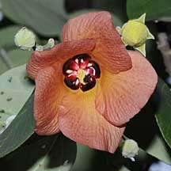 Woodland Park, Apr 09 |
|
Links
Other references
|
|
|